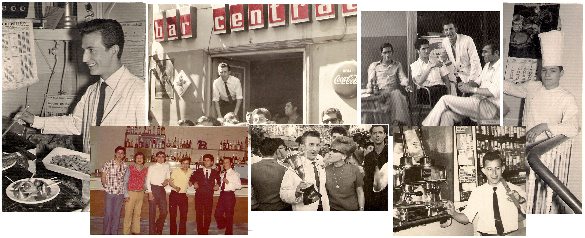
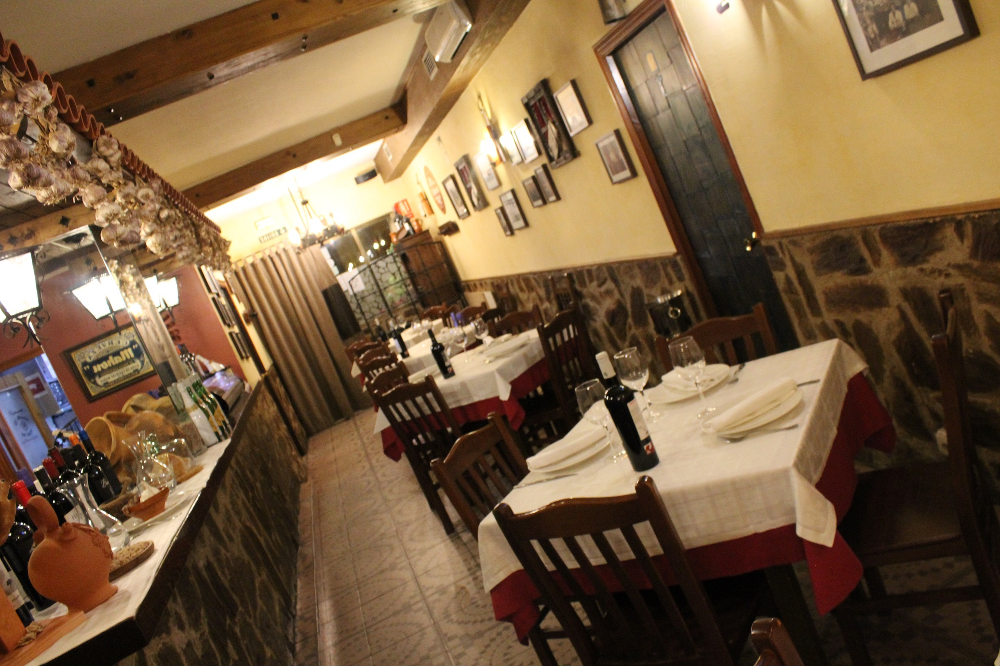

Una saga familiar zamorana de hosteleros con décadas de trayectoria.

El nombre del restaurante rinde homenaje a una saga familiar zamorana de hosteleros conocida como "los Zorros". El patriarca, Pepe "el Zorro", regentó negocios emblemáticos de la ciudad como El Central, El Salamanca, El Alcázar y El Azul Marino.
Sus hermanos también dejaron huella en la hostelería zamorana: Paco con el Bar Antonio, Rafa con el Mesón Los Duques, Juan con La Deportiva, y Manolo y Antonio con el antiguo Mesón del Zorro.
Hoy la tradición continúa con una nueva generación que mantiene viva la esencia de la cocina castellana.

El Mesón del Zorro es una empresa familiar donde cada miembro aporta su saber hacer:
Un equipo reducido y comprometido que apuesta por el trato cercano y la atención personalizada.